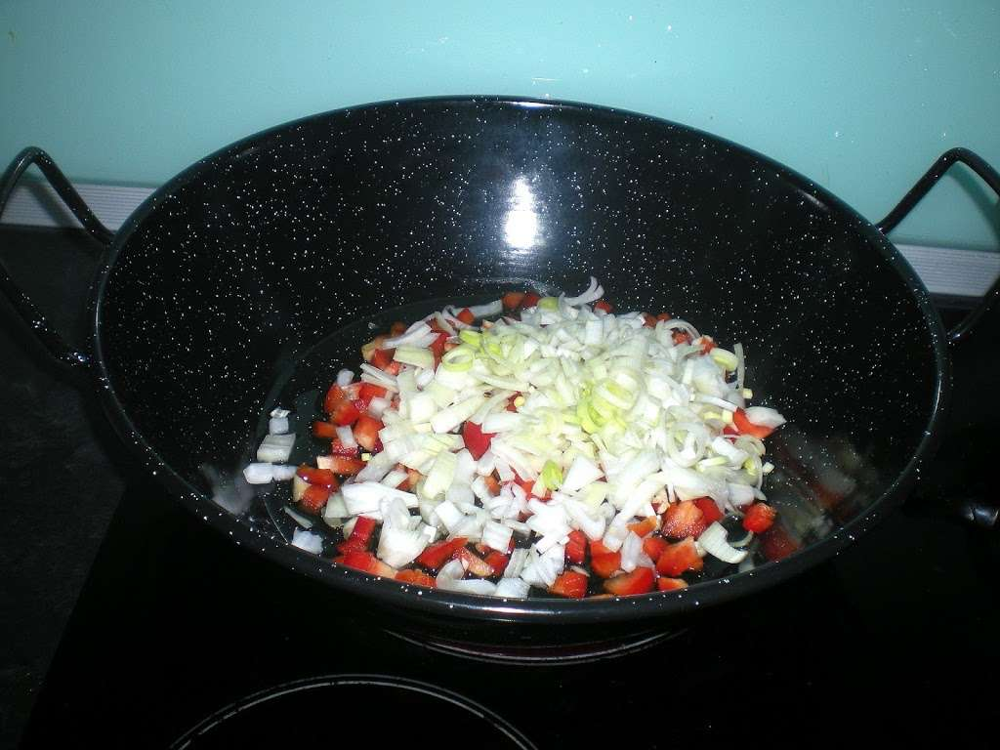

Manuela Carmena
Usuaria desde 2015
Reputación: Alta
Pabellón Criollo venezolano
Ingredientes
Para las caraotas: 1/2 Kg. de caraotas negras, 2 cebollas medianas, 1 pimentón rojo, cebollín al gusto, ají dulce, piemienta dulce, una pisca de comino, un trozo de chuleta o costillas ahumadas.
Para la carne: 1/2 kg.de falda de res, 2 cebollas medianas, 2 pimentones (uno verde y uno rojo), ají dulce al gusto, 1/2 taza de leche de coco, 3 tomates frescos o en lata (al natural), pimienta dulce, sal y pimienta para adobar.
Arroz Blanco ya preparado.
Para las tajadas: 1 o 2 plátanos (no cambur) maduros.
Preparación
Caraotas: en una olla colocar agua suficiente para cubrir las caraotas, cuando hierva, agregar las caraotas sal al gusto y la chuleta o costilla,y dejar cocinar por 1 hora o hasta que estén blandas las caraotas, si lo desea puede agregar un cubito de caldo al agua para dar sabor o sal. Mientras haga un sofrito con la cebolla, pimentones, ají, cebollín, agregele pimienta dulce, sal y la pizca de comino. 15 minútos antes de apagar las caraotas agréguele el sofito mezcle y tape hasta que el agua se halla consumido un poco.
Carne mechada: Cocine la carne en agua hirviendo, sazonada con sal, caldo en cubito, hierbas o a su gusto. Una vez cocinada y fría, prodeda a mecharla (con los dedos separe trozos de carne que parezcan hilachas, desechando pellegos y grasa) corte el resto de los ingredientes en julianas, reogue la cebolla y el pimentón, agregue el tomate, luego la carne sazone, por último agregue la leche del coco, cocine hasta que se haya formado una salsa.Debe quedar jugosa.
Tajadas: Rebane el platano haciendo cortes transversales, las tajadas deben ser de 1/2 cm. de espesor o un poquito menos. En aceite bien caliente fríalas hasta que estén doradas.
Una vez que todo esté listo sirva una taza de arroz blanco, una taza de caraotas, una porción de carne mechada y rodee con tres o cuatro tajadas (esto en el mismo plato, para una persona con buen apetito).
Consejos
Las caraotas pueden hacerse con un toque de dulce, al agregar el sofrito puede agregar un tocito de papelón o azucar morena, si lo prefiere, agregue el azucar una vez que se las haya servido en el plato.
La carne adquiere muy buen sabor si se le agregan 2 cucharadas de Ketchup, junto con el tomate al natural.
Si quiere ahorrarse unas calorías puede preparar el plátano al horno, pógalo en el horno entero a temperatura media hasta que se dore por encima, engrase un poco el molde para que no se pegue.